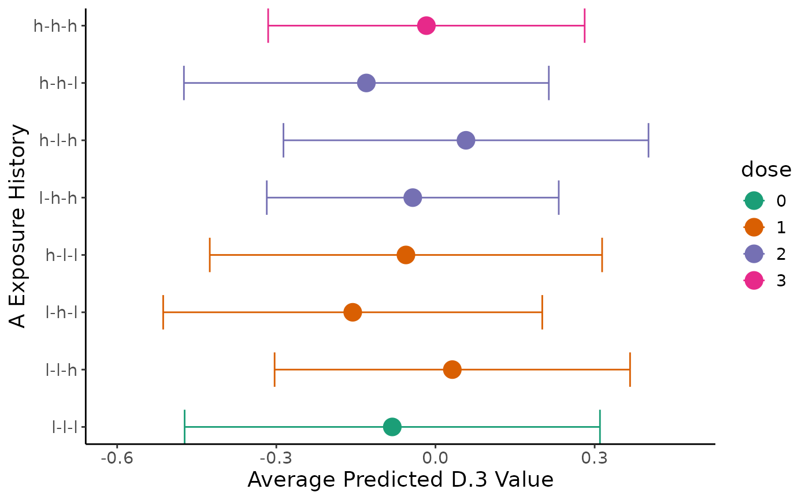
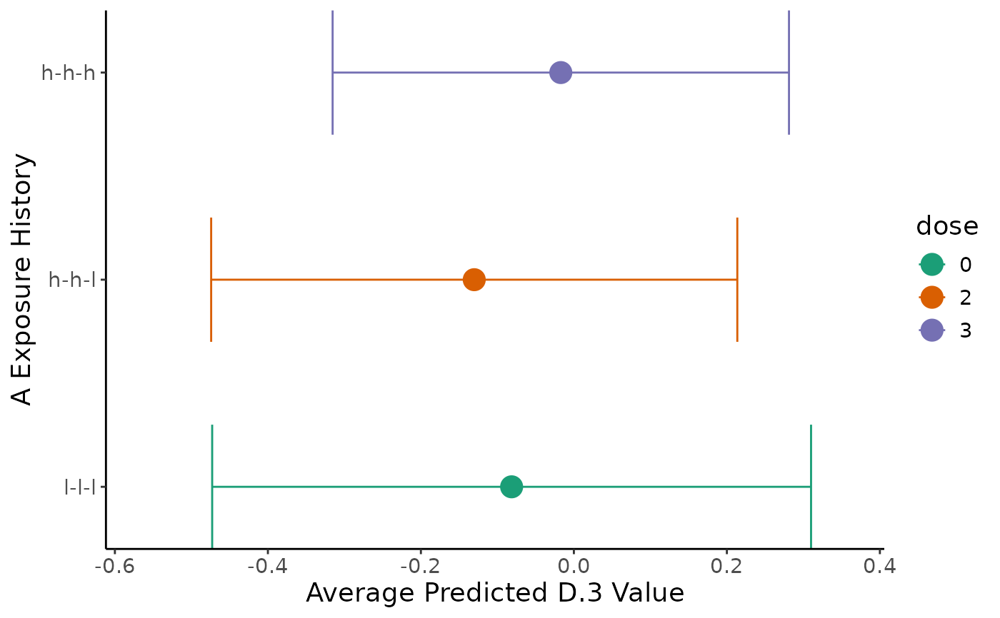

Estimate, compare, and visualize exposure histories
Source:R/compareHistories.R
compareHistories.RdTakes fitted model output to created predicted values for user-specified histories (pooling for imputed data), before conducting contrast comparisons (pooling for imputed data), correcting for multiple comparisons, and then plotting results.
Usage
compareHistories(
obj,
fit,
hi_lo_cut = c(0.3, 0.6),
dose_level = c("h", "l"),
reference = NULL,
comparison = NULL,
mc_comp_method = stats::p.adjust.methods,
verbose = FALSE,
save.out = FALSE,
home_dir
)
# S3 method for devMSM_comparisons
print(x, ...)
# S3 method for devMSM_comparisons
plot(
x,
colors = "Dark2",
exp_lab = NULL,
out_lab = NULL,
save.out = FALSE,
home_dir = NULL,
...
)
# S3 method for devMSM_comparisons
summary(object, type = c("preds", "comps"), ...)Arguments
- obj
initialized MSM object from
initMSM()- fit
list of model outputs from
fitModel()- hi_lo_cut
(optional) list of two numbers indicating quantile values that reflect high and low values, respectively, for continuous exposure (default is median split)
- dose_level
(optional) "l" or "h" indicating whether low or high doses should be tallied in tables and plots (default is high "h")
- reference
(optional) list sof one or more strings of "-"-separated "l" and "h" values indicative of a reference exposure history to which to compare comparison, required if comparison is supplied
- comparison
(optional) list of one or more strings of "-"-separated "l" and "h" values indicative of comparison history/histories to compare to reference, required if reference is supplied
- mc_comp_method
(optional) character abbreviation for multiple comparison correction method for stats::p.adjust, default is Benjamini-Hochburg ("BH")
- verbose
(optional) TRUE or FALSE indicator for printing output to console (default is FALSE)
- save.out
(optional) TRUE or FALSE indicator to save output and intermediary output locally (default is FALSE)
- home_dir
path to home directory (required if save.out = TRUE)
- x
devMSM_histories object from
compareHistories()- ...
ignored
- colors
(optional) character specifying Brewer palette or list of colors (n(epochs)+1) for plotting (default is "Dark2" palette)
- exp_lab
(optional) character label for exposure variable in plots (default is variable name)
- out_lab
(optional) character label for outcome variable in plots (default is variable name)
- object
devMSM_histories object from
compareHistories()- type
Either "preds" or "comps" corresponding to the results of
marginaleffects::avg_predictions()at low and high dosages ormarginaleffects::comparisons()respectively
Value
list containing two dataframes: preds with predictions from
marginaleffects::avg_predictions() containing average expected outcome
for different exposure histories and comps with contrasts from
marginaleffects::comparisons() comparing different exposure history
See also
marginaleffects::avg_predictions(),
https://cran.r-project.org/web/packages/marginaleffects/marginaleffects.pdf;
marginaleffects::hypotheses(),
https://cran.r-project.org/web/packages/marginaleffects/marginaleffects.pdf;
stats::p.adjust(),
https://www.rdocumentation.org/packages/stats/versions/3.6.2/topics/p.adjust;
Examples
library(devMSMs)
data <- data.frame(
ID = 1:50,
A.1 = rnorm(n = 50),
A.2 = rnorm(n = 50),
A.3 = rnorm(n = 50),
B.1 = rnorm(n = 50),
B.2 = rnorm(n = 50),
B.3 = rnorm(n = 50),
C = rnorm(n = 50),
D.3 = rnorm(n = 50)
)
obj <- initMSM(
data,
exposure = c("A.1", "A.2", "A.3"),
ti_conf = c("C"),
tv_conf = c("B.1", "B.2", "B.3", "D.3")
)
f <- createFormulas(obj, type = "short")
w <- createWeights(data = data, obj = obj, formulas = f)
fit <- fitModel(
data = data, obj = obj, weights = w,
outcome = "D.3", model = "m0"
)
comp = compareHistories(
obj, fit = fit,
hi_lo_cut = c(0.3, 0.6)
)
print(comp)
#> Summary of Exposure Main Effects:
#> USER ALERT: Out of the total of 50 individuals in the sample, below is the distribution of the 50 (100%) individuals that fall into 8 user-selected exposure histories (out of the 8 total) created from 60th and 30th percentile values for low and high levels of exposure-epoch A.1, A.2, A.3.
#> USER ALERT: Please inspect the distribution of the sample across the following exposure histories and ensure there is sufficient spread to avoid extrapolation and low precision:
#>
#> +---------------+---+
#> | epoch_history | n |
#> +===============+===+
#> | h-h-h | 8 |
#> +---------------+---+
#> | h-h-l | 4 |
#> +---------------+---+
#> | h-l-h | 6 |
#> +---------------+---+
#> | h-l-l | 7 |
#> +---------------+---+
#> | l-h-h | 6 |
#> +---------------+---+
#> | l-h-l | 7 |
#> +---------------+---+
#> | l-l-h | 5 |
#> +---------------+---+
#> | l-l-l | 7 |
#> +---------------+---+
#>
#> Table: Summary of user-selected exposure histories based on exposure main effects A.1, A.2, A.3:
#>
#> Below are the pooled average predictions by user-specified history:
#> +-------+-------+-------+--------+----------+-----------+---------+
#> | term | A.1 | A.2 | A.3 | estimate | std.error | p.value |
#> +=======+=======+=======+========+==========+===========+=========+
#> | l-l-l | -0.6 | -0.66 | -0.667 | -0.081 | 0.2 | 0.68 |
#> +-------+-------+-------+--------+----------+-----------+---------+
#> | l-l-h | -0.6 | -0.66 | 0.039 | 0.032 | 0.17 | 0.85 |
#> +-------+-------+-------+--------+----------+-----------+---------+
#> | l-h-l | -0.6 | 0.24 | -0.667 | -0.156 | 0.18 | 0.39 |
#> +-------+-------+-------+--------+----------+-----------+---------+
#> | l-h-h | -0.6 | 0.24 | 0.039 | -0.043 | 0.14 | 0.76 |
#> +-------+-------+-------+--------+----------+-----------+---------+
#> | h-l-l | 0.13 | -0.66 | -0.667 | -0.056 | 0.19 | 0.77 |
#> +-------+-------+-------+--------+----------+-----------+---------+
#> | h-l-h | 0.13 | -0.66 | 0.039 | 0.057 | 0.18 | 0.74 |
#> +-------+-------+-------+--------+----------+-----------+---------+
#> | h-h-l | 0.13 | 0.24 | -0.667 | -0.13 | 0.18 | 0.46 |
#> +-------+-------+-------+--------+----------+-----------+---------+
#> | h-h-h | 0.13 | 0.24 | 0.039 | -0.017 | 0.15 | 0.91 |
#> +-------+-------+-------+--------+----------+-----------+---------+
#>
#> Conducting multiple comparison correction for all pairings between comparison histories and each refernece history using the holm method.
#>
#>
#> +-------------------+-------------+------------+-----------+--------------+
#> | term | estimate | std.error | p.value | p.value_corr |
#> +===================+=============+============+===========+==============+
#> | (l-l-l) - (l-l-h) | -0.11315771 | 0.09475554 | 0.2323971 | 1 |
#> +-------------------+-------------+------------+-----------+--------------+
#> | (l-l-l) - (l-h-l) | 0.07457778 | 0.12560794 | 0.5526896 | 1 |
#> +-------------------+-------------+------------+-----------+--------------+
#> | (l-l-l) - (l-h-h) | -0.03857993 | 0.14802421 | 0.7943759 | 1 |
#> +-------------------+-------------+------------+-----------+--------------+
#> | (l-l-l) - (h-l-l) | -0.02572135 | 0.11271907 | 0.8194986 | 1 |
#> +-------------------+-------------+------------+-----------+--------------+
#> | (l-l-l) - (h-l-h) | -0.13887906 | 0.16605288 | 0.4029555 | 1 |
#> +-------------------+-------------+------------+-----------+--------------+
#> | (l-l-l) - (h-h-l) | 0.04885643 | 0.17419041 | 0.7791115 | 1 |
#> +-------------------+-------------+------------+-----------+--------------+
#> | (l-l-l) - (h-h-h) | -0.06430129 | 0.20582874 | 0.7547351 | 1 |
#> +-------------------+-------------+------------+-----------+--------------+
#> | (l-l-h) - (l-h-l) | 0.18773549 | 0.16613478 | 0.2584681 | 1 |
#> +-------------------+-------------+------------+-----------+--------------+
#> | (l-l-h) - (l-h-h) | 0.07457778 | 0.12560794 | 0.5526896 | 1 |
#> +-------------------+-------------+------------+-----------+--------------+
#> | (l-l-h) - (h-l-l) | 0.08743636 | 0.12567753 | 0.4866043 | 1 |
#> +-------------------+-------------+------------+-----------+--------------+
#> | (l-l-h) - (h-l-h) | -0.02572135 | 0.11271907 | 0.8194986 | 1 |
#> +-------------------+-------------+------------+-----------+--------------+
#> | (l-l-h) - (h-h-l) | 0.16201414 | 0.19046351 | 0.3949744 | 1 |
#> +-------------------+-------------+------------+-----------+--------------+
#> | (l-l-h) - (h-h-h) | 0.04885643 | 0.17419040 | 0.7791115 | 1 |
#> +-------------------+-------------+------------+-----------+--------------+
#> | (l-h-l) - (l-h-h) | -0.11315771 | 0.09475553 | 0.2323970 | 1 |
#> +-------------------+-------------+------------+-----------+--------------+
#> | (l-h-l) - (h-l-l) | -0.10029913 | 0.16316737 | 0.5387523 | 1 |
#> +-------------------+-------------+------------+-----------+--------------+
#> | (l-h-l) - (h-l-h) | -0.21345684 | 0.21056201 | 0.3107030 | 1 |
#> +-------------------+-------------+------------+-----------+--------------+
#> | (l-h-l) - (h-h-l) | -0.02572135 | 0.11271907 | 0.8194986 | 1 |
#> +-------------------+-------------+------------+-----------+--------------+
#> | (l-h-l) - (h-h-h) | -0.13887906 | 0.16605289 | 0.4029556 | 1 |
#> +-------------------+-------------+------------+-----------+--------------+
#> | (l-h-h) - (h-l-l) | 0.01285858 | 0.16391475 | 0.9374727 | 1 |
#> +-------------------+-------------+------------+-----------+--------------+
#> | (l-h-h) - (h-l-h) | -0.10029913 | 0.16316737 | 0.5387523 | 1 |
#> +-------------------+-------------+------------+-----------+--------------+
#> | (l-h-h) - (h-h-l) | 0.08743636 | 0.12567754 | 0.4866043 | 1 |
#> +-------------------+-------------+------------+-----------+--------------+
#> | (l-h-h) - (h-h-h) | -0.02572135 | 0.11271908 | 0.8194986 | 1 |
#> +-------------------+-------------+------------+-----------+--------------+
#> | (h-l-l) - (h-l-h) | -0.11315771 | 0.09475554 | 0.2323971 | 1 |
#> +-------------------+-------------+------------+-----------+--------------+
#> | (h-l-l) - (h-h-l) | 0.07457778 | 0.12560794 | 0.5526896 | 1 |
#> +-------------------+-------------+------------+-----------+--------------+
#> | (h-l-l) - (h-h-h) | -0.03857993 | 0.14802421 | 0.7943759 | 1 |
#> +-------------------+-------------+------------+-----------+--------------+
#> | (h-l-h) - (h-h-l) | 0.18773549 | 0.16613478 | 0.2584681 | 1 |
#> +-------------------+-------------+------------+-----------+--------------+
#> | (h-l-h) - (h-h-h) | 0.07457778 | 0.12560794 | 0.5526896 | 1 |
#> +-------------------+-------------+------------+-----------+--------------+
#> | (h-h-l) - (h-h-h) | -0.11315771 | 0.09475553 | 0.2323971 | 1 |
#> +-------------------+-------------+------------+-----------+--------------+
plot(comp)

summary(comp, "preds")
#> term A.1 A.2 A.3 estimate std.error statistic
#> 1 l-l-l -0.6049775 -0.6609111 -0.66725269 -0.08140449 0.1997103 -0.4076128
#> 2 l-l-h -0.6049775 -0.6609111 0.03889876 0.03175323 0.1709179 0.1857805
#> 3 l-h-l -0.6049775 0.2360764 -0.66725269 -0.15598226 0.1822728 -0.8557625
#> 4 l-h-h -0.6049775 0.2360764 0.03889876 -0.04282455 0.1403828 -0.3050556
#> 5 h-l-l 0.1269727 -0.6609111 -0.66725269 -0.05568313 0.1886474 -0.2951704
#> 6 h-l-h 0.1269727 -0.6609111 0.03889876 0.05747458 0.1755162 0.3274602
#> 7 h-h-l 0.1269727 0.2360764 -0.66725269 -0.13026091 0.1754605 -0.7423946
#> 8 h-h-h 0.1269727 0.2360764 0.03889876 -0.01710320 0.1521830 -0.1123857
#> p.value s.value conf.low conf.high dose
#> 1 0.6835579 0.5488644 -0.4728295 0.3100205 0
#> 2 0.8526169 0.2300305 -0.3032398 0.3667462 1
#> 3 0.3921292 1.3505991 -0.5132305 0.2012660 1
#> 4 0.7603238 0.3953141 -0.3179697 0.2323206 2
#> 5 0.7678637 0.3810778 -0.4254253 0.3140590 1
#> 6 0.7433198 0.4279450 -0.2865309 0.4014800 2
#> 7 0.4578483 1.1270585 -0.4741571 0.2136353 2
#> 8 0.9105176 0.1352412 -0.3153764 0.2811700 3
summary(comp, "comps")
#> term estimate std.error statistic p.value s.value
#> 1 (l-l-l) - (l-l-h) -0.11315771 0.09475554 -1.19420687 0.2323971 2.10533631
#> 2 (l-l-l) - (l-h-l) 0.07457778 0.12560794 0.59373459 0.5526896 0.85545851
#> 3 (l-l-l) - (l-h-h) -0.03857993 0.14802421 -0.26063259 0.7943759 0.33210633
#> 4 (l-l-l) - (h-l-l) -0.02572135 0.11271907 -0.22818988 0.8194986 0.28718656
#> 5 (l-l-l) - (h-l-h) -0.13887906 0.16605288 -0.83635443 0.4029555 1.31130743
#> 6 (l-l-l) - (h-h-l) 0.04885643 0.17419041 0.28047713 0.7791115 0.36009835
#> 7 (l-l-l) - (h-h-h) -0.06430129 0.20582874 -0.31240189 0.7547351 0.40595769
#> 8 (l-l-h) - (l-h-l) 0.18773549 0.16613478 1.13001922 0.2584681 1.95194172
#> 9 (l-l-h) - (l-h-h) 0.07457778 0.12560794 0.59373460 0.5526896 0.85545853
#> 10 (l-l-h) - (h-l-l) 0.08743636 0.12567753 0.69571990 0.4866043 1.03917914
#> 11 (l-l-h) - (h-l-h) -0.02572135 0.11271907 -0.22818989 0.8194986 0.28718657
#> 12 (l-l-h) - (h-h-l) 0.16201414 0.19046351 0.85063085 0.3949744 1.34016877
#> 13 (l-l-h) - (h-h-h) 0.04885643 0.17419040 0.28047714 0.7791115 0.36009835
#> 14 (l-h-l) - (l-h-h) -0.11315771 0.09475553 -1.19420690 0.2323970 2.10533637
#> 15 (l-h-l) - (h-l-l) -0.10029913 0.16316737 -0.61470091 0.5387523 0.89230608
#> 16 (l-h-l) - (h-l-h) -0.21345684 0.21056201 -1.01374812 0.3107030 1.68639213
#> 17 (l-h-l) - (h-h-l) -0.02572135 0.11271907 -0.22818988 0.8194986 0.28718656
#> 18 (l-h-l) - (h-h-h) -0.13887906 0.16605289 -0.83635441 0.4029556 1.31130739
#> 19 (l-h-h) - (h-l-l) 0.01285858 0.16391475 0.07844676 0.9374727 0.09315145
#> 20 (l-h-h) - (h-l-h) -0.10029913 0.16316737 -0.61470091 0.5387523 0.89230608
#> 21 (l-h-h) - (h-h-l) 0.08743636 0.12567754 0.69571987 0.4866043 1.03917910
#> 22 (l-h-h) - (h-h-h) -0.02572135 0.11271908 -0.22818987 0.8194986 0.28718655
#> 23 (h-l-l) - (h-l-h) -0.11315771 0.09475554 -1.19420687 0.2323971 2.10533630
#> 24 (h-l-l) - (h-h-l) 0.07457778 0.12560794 0.59373459 0.5526896 0.85545852
#> 25 (h-l-l) - (h-h-h) -0.03857993 0.14802421 -0.26063259 0.7943759 0.33210632
#> 26 (h-l-h) - (h-h-l) 0.18773549 0.16613478 1.13001921 0.2584681 1.95194170
#> 27 (h-l-h) - (h-h-h) 0.07457778 0.12560794 0.59373459 0.5526896 0.85545852
#> 28 (h-h-l) - (h-h-h) -0.11315771 0.09475553 -1.19420688 0.2323971 2.10533633
#> conf.low conf.high dose p.value_corr
#> 1 -0.2988751 0.07255973 0 - 1 1
#> 2 -0.1716093 0.32076482 0 - 1 1
#> 3 -0.3287021 0.25154219 0 - 2 1
#> 4 -0.2466467 0.19520397 0 - 1 1
#> 5 -0.4643367 0.18657860 0 - 2 1
#> 6 -0.2925505 0.39026335 0 - 2 1
#> 7 -0.4677182 0.33911563 0 - 3 1
#> 8 -0.1378827 0.51335367 1 - 1 1
#> 9 -0.1716093 0.32076481 1 - 2 1
#> 10 -0.1588871 0.33375980 1 - 1 1
#> 11 -0.2466467 0.19520396 1 - 2 1
#> 12 -0.2112875 0.53531576 1 - 2 1
#> 13 -0.2925505 0.39026334 1 - 3 1
#> 14 -0.2988751 0.07255972 1 - 2 1
#> 15 -0.4201013 0.21950304 1 - 1 1
#> 16 -0.6261508 0.19923711 1 - 2 1
#> 17 -0.2466467 0.19520397 1 - 2 1
#> 18 -0.4643367 0.18657861 1 - 3 1
#> 19 -0.3084084 0.33412559 2 - 1 1
#> 20 -0.4201013 0.21950304 2 - 2 1
#> 21 -0.1588871 0.33375980 2 - 2 1
#> 22 -0.2466467 0.19520398 2 - 3 1
#> 23 -0.2988751 0.07255973 1 - 2 1
#> 24 -0.1716093 0.32076481 1 - 2 1
#> 25 -0.3287021 0.25154219 1 - 3 1
#> 26 -0.1378827 0.51335367 2 - 2 1
#> 27 -0.1716093 0.32076481 2 - 3 1
#> 28 -0.2988751 0.07255972 2 - 3 1
comp2 = compareHistories(
obj, fit = fit,
reference = "l-l-l",
comparison = c("h-h-h", "h-h-l")
)
print(comp2)
#> Summary of Exposure Main Effects:
#> USER ALERT: Out of the total of 50 individuals in the sample, below is the distribution of the 19 (38%) individuals that fall into 3 user-selected exposure histories (out of the 8 total) created from 60th and 30th percentile values for low and high levels of exposure-epoch A.1, A.2, A.3.
#> USER ALERT: Please inspect the distribution of the sample across the following exposure histories and ensure there is sufficient spread to avoid extrapolation and low precision:
#>
#> +---------------+---+
#> | epoch_history | n |
#> +===============+===+
#> | h-h-h | 8 |
#> +---------------+---+
#> | h-h-l | 4 |
#> +---------------+---+
#> | l-l-l | 7 |
#> +---------------+---+
#>
#> Table: Summary of user-selected exposure histories based on exposure main effects A.1, A.2, A.3:
#>
#> Below are the pooled average predictions by user-specified history:
#> +-------+-------+-------+--------+----------+-----------+---------+
#> | term | A.1 | A.2 | A.3 | estimate | std.error | p.value |
#> +=======+=======+=======+========+==========+===========+=========+
#> | l-l-l | -0.6 | -0.66 | -0.667 | -0.081 | 0.2 | 0.68 |
#> +-------+-------+-------+--------+----------+-----------+---------+
#> | h-h-l | 0.13 | 0.24 | -0.667 | -0.13 | 0.18 | 0.46 |
#> +-------+-------+-------+--------+----------+-----------+---------+
#> | h-h-h | 0.13 | 0.24 | 0.039 | -0.017 | 0.15 | 0.91 |
#> +-------+-------+-------+--------+----------+-----------+---------+
#>
#> Conducting multiple comparison correction for all pairings between comparison histories and each refernece history using the holm method.
#>
#>
#> +-------------------+-------------+-----------+-----------+--------------+
#> | term | estimate | std.error | p.value | p.value_corr |
#> +===================+=============+===========+===========+==============+
#> | (h-h-h) - (l-l-l) | -0.06595963 | 0.2789104 | 0.8130522 | 1 |
#> +-------------------+-------------+-----------+-----------+--------------+
#> | (h-h-l) - (l-l-l) | -0.06595963 | 0.2789104 | 0.8130522 | 1 |
#> +-------------------+-------------+-----------+-----------+--------------+
plot(comp2)

summary(comp2, "preds")
#> term A.1 A.2 A.3 estimate std.error statistic
#> 1 l-l-l -0.6049775 -0.6609111 -0.66725269 -0.08140449 0.1997103 -0.4076128
#> 7 h-h-l 0.1269727 0.2360764 -0.66725269 -0.13026091 0.1754605 -0.7423946
#> 8 h-h-h 0.1269727 0.2360764 0.03889876 -0.01710320 0.1521830 -0.1123857
#> p.value s.value conf.low conf.high dose
#> 1 0.6835579 0.5488644 -0.4728295 0.3100205 0
#> 7 0.4578483 1.1270585 -0.4741571 0.2136353 2
#> 8 0.9105176 0.1352412 -0.3153764 0.2811700 3
summary(comp2, "comps")
#> term estimate std.error statistic p.value s.value
#> 1 (h-h-h) - (l-l-l) -0.06595963 0.2789104 -0.2364904 0.8130522 0.2985802
#> 2 (h-h-l) - (l-l-l) -0.06595963 0.2789104 -0.2364904 0.8130522 0.2985802
#> conf.low conf.high dose p.value_corr
#> 1 -0.6126139 0.4806947 3 - 0 1
#> 2 -0.6126139 0.4806947 2 - 0 1